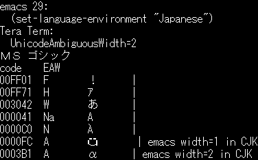
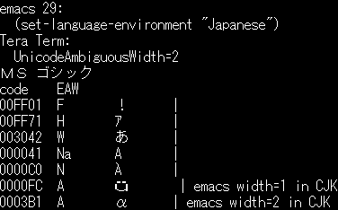

Tera Term のリポジトリにテスト用テキストがあるので表示してチェックできます。
Latin-1 などシングルバイト文字コードの文字幅は1cellです。
Shift_JIS などのダブルバイト文字コードの文字幅は、1バイト文字は1cell, 2バイト文字は2cellです。
Unicode では1つの文字の文字幅が場合によって変化します。
例えば、"§"(section sign,節記号,セクションマーク) の文字コードは次のようになります
| code | character code(code point) | cell | |--------------------|----------------------------|--------| | ISO8859-1(Latin-1) | 0xA7 | 1 | | Shift_JIS(CP932) | 0x8198 | 2 | | KS5601(CP949) | 0xA1D7 | 2 | | Big5(CP950) | 0xA1B1 | 2 | | BG2312(CP936) | 0xA1EC | 2 | | Unicode | 0xA7 (U+00A7) | 1 or 2 |
マルチバイト文字コードを使用していた環境(CJK)では 2cell で、 その他の環境では 1cell で表示すると自然に使用できます。 文字幅が変化する文字種をAmbiguous(曖昧)といいます。 詳しくはEast_Asian_Widthプロパティと文字幅(セル数)についてを参照ください。
Unicodeでは文字幅を6種類に分類して、 East_Asian_Widthプロパティ(東アジアの文字幅)として定義しています。
文字幅の解釈には次の2種類があります。
これを表にすると次のようになります。
cells数(2=全角/1=半角) | | 東アジアの | 東アジア以外の | | プロパティ値 | 従来文字コードの文脈 | 従来文字コードの文脈 | | F(Fullwidth,全角) | 2 | 2 | | H(Halfwidth,半角) | 1 | 1 | | W(Wide,広) | 2 | 2 | | Na(Narrow,狭) | 1 | 1 | | A(Ambiguous,曖昧) | 2 | 1 | | N(Neutral,中立) | 1 | 1 |
Tera Term は次のデータのプロパティをもとに描画する文字幅を決定しています。
https://www.unicode.org/Public/UCD/latest/ucd/EastAsianWidth.txt
Ambiguous 文字の文字幅 については
Ambiguous Characters width 設定で指定することができます。
接続先のプログラムは CJK 環境のとき、
Ambiguous 文字の文字幅を 2 で想定するのが一般的です。
Vim の例:
ambiwidth=single のとき Ambiguous 文字の文字幅が 1 です。
ambiwidth=double のときは Ambiguous 文字の文字幅が 2 になります。
Emacs のように「ウムラウト文字など一部の文字の幅は 1 にする」などのカスタマイズをしたい場合は、setcellwidths() を使うことができます。
Emacs の例:
Emacs は通常 Ambiguous 文字の文字幅が 1 です。
(set-language-environment "Japanese") を呼ぶと use-cjk-char-width-table が実行されます。
これにより一部の Ambiguous 文字の文字幅が 2 に（例えばウムラウト文字は 1 のままで、ギリシャ文字やキリル文字は 2 に）なります。
「Tera Term が描画する文字幅」を「接続先が意図している文字幅」に合うように設定すると、画面崩れが少なくなります。
絵文字プロパティは East_Asian_Width とは別のプロパティです。
絵文字プロパティが Yes の文字でも、それとは別に East_Asian_Width プロパティの値を持っています。
Tera Term は次のデータの Extended_Pictographic をもとに絵文字の判定を行っています。
https://www.unicode.org/Public/UCD/latest/ucd/emoji/emoji-data.txt
接続先が意図する文字幅とフォントデザインの文字幅が異なることがあります。
たとえば East_Asian_Width プロパティが Neutral の絵文字で、
フォントがその文字を 2 Cell でデザインしていることがあります。
Override Emoji Characters width 設定で
絵文字の文字幅を 2 Cell に指定することで、フォントのデザインどおりに
描画することができます。
そのかわり描画崩れが起きたり、Neutral の絵文字も 2 Cell で描画されます。
 
